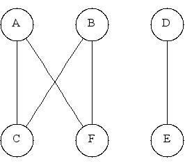

adjacency_matrix<Directed, VertexProperty,
EdgeProperty, GraphProperty,
Allocator>
The adjacency_matrix class implements the BGL graph interface
using the traditional adjacency matrix storage format. For a graph
with V vertices, a V x V matrix is used, where each
element aij is a boolean flag that says whether
there is an edge from vertex i to vertex j. Figure 1 shows the adjacency matrix
representation of a graph.
Figure 1: Adjacency Matrix Representation of a Directed Graph.
 |
|
The advantage of this matrix format over the adjacency list is that
edge insertion and removal is constant time. There are several
disadvantages. The first is that the amount of memory used is
O(V2) instead of O(V + E) (where E is
the number of edges). The second is that operations that traverse all
the out-edges of each vertex (such as breadth-first search) run in
O(V2) time instead of O(V + E) time for the
adjacency list. In short, it is better to use the
adjacency_matrix for dense graphs (where E is close to
V2) and it is better to use adjacency_list for sparse
graphs (where E is much smaller than V2).
The adjacency_matrix class extends the traditional
data-structure by allowing objects to be attached to vertices and
edges using the same property template parameters supported by adjacency_list. These may be
bundled properties or standard (backward-compatible)
interior
properties. The types of all property values must be
Copy Constructible, Assignable and Default Constructible.
In the case of an undirected graph, the
adjacency_matrix. class does not use a full V x V
matrix but instead uses a lower triangle (the diagonal and below)
since the matrix for an undirected graph is symmetric. This reduces
the storage to (V2)/2. Figure 2 shows an adjacency
matrix representation of an undirected graph.
Figure 1: Adjacency Matrix Representation of an Undirected Graph.
|  |
 |
Example
Creating the graph of Figure 1.
enum { A, B, C, D, E, F, N };
const char* name = "ABCDEF";
typedef boost::adjacency_matrix<boost::directedS> Graph;
Graph g(N);
add_edge(B, C, g);
add_edge(B, F, g);
add_edge(C, A, g);
add_edge(C, C, g);
add_edge(D, E, g);
add_edge(E, D, g);
add_edge(F, A, g);
std::cout << "vertex set: ";
boost::print_vertices(g, name);
std::cout << std::endl;
std::cout << "edge set: ";
boost::print_edges(g, name);
std::cout << std::endl;
std::cout << "out-edges: " << std::endl;
boost::print_graph(g, name);
std::cout << std::endl;
The output is:
vertex set: A B C D E F
edge set: (B,C) (B,F) (C,A) (C,C) (D,E) (E,D) (F,A)
out-edges:
A -->
B --> C F
C --> A C
D --> E
E --> D
F --> A
Creating the graph of Figure 2.
enum { A, B, C, D, E, F, N };
const char* name = "ABCDEF";
typedef boost::adjacency_matrix<boost::undirectedS> UGraph;
UGraph ug(N);
add_edge(B, C, ug);
add_edge(B, F, ug);
add_edge(C, A, ug);
add_edge(D, E, ug);
add_edge(F, A, ug);
std::cout << "vertex set: ";
boost::print_vertices(ug, name);
std::cout << std::endl;
std::cout << "edge set: ";
boost::print_edges(ug, name);
std::cout << std::endl;
std::cout << "incident edges: " << std::endl;
boost::print_graph(ug, name);
std::cout << std::endl;
The output is:
vertex set: A B C D E F
edge set: (C,A) (C,B) (E,D) (F,A) (F,B)
incident edges:
A <--> C F
B <--> C F
C <--> A B
D <--> E
E <--> D
F <--> A B
Where Defined
boost/graph/adjacency_matrix.hpp
Template Parameters
| Parameter | Description | Default |
| Directed |
A selector to choose whether the graph is directed or undirected. The options are directedS and undirectedS. |
directedS |
| VertexProperty |
for specifying internal property storage. |
no_property |
| EdgeProperty |
for specifying internal property storage. |
no_property |
| GraphProperty |
for specifying property storage for the graph object. |
no_property |
Model Of
VertexAndEdgeListGraph,
Incidence Graph,
Bidirectional Graph,
AdjacencyMatrix, MutablePropertyGraph,
CopyConstructible,
and Assignable.
Associated Types
graph_traits<adjacency_matrix>::vertex_descriptor
The type for the vertex descriptors associated with the
adjacency_matrix.
(Required by Graph.)
graph_traits<adjacency_matrix>::edge_descriptor
The type for the edge descriptors associated with the
adjacency_matrix.
(Required by Graph.)
graph_traits<adjacency_matrix>::vertex_iterator
The type for the iterators returned by vertices().
The vertex iterator models RandomAccessIterator.
(Required by VertexListGraph.)
graph_traits<adjacency_matrix>::edge_iterator
The type for the iterators returned by edges(). This
iterator models MultiPassInputIterator.
(Required by EdgeListGraph.)
graph_traits<adjacency_matrix>::out_edge_iterator
The type for the iterators returned by out_edges(). This
iterator models MultiPassInputIterator.
(Required by IncidenceGraph.)
graph_traits<adjacency_matrix>::in_edge_iterator
The type for the iterators returned by in_edges(). This
iterator models MultiPassInputIterator.
(Required by BidirectionalGraph.)
graph_traits<adjacency_matrix>::adjacency_iterator
The type for the iterators returned by adjacent_vertices(). This
iterator models the same concept as the out-edge iterator.
(Required by AdjacencyGraph.)
graph_traits<adjacency_matrix>::directed_category
Provides information about whether the graph is directed
(directed_tag) or undirected (undirected_tag).
(Required by Graph.)
graph_traits<adjacency_matrix>::edge_parallel_category
An adjacency matrix does not allow the insertion of
parallel edges, so this type is always
disallow_parallel_edge_tag.
(Required by Graph.)
graph_traits<adjacency_matrix>::vertices_size_type
The type used for dealing with the number of vertices in
the graph.
(Required by VertexListGraph.)
graph_traits<adjacency_matrix>::edges_size_type
The type used for dealing with the number of edges in the graph.
(Required by EdgeListGraph.)
graph_traits<adjacency_matrix>::degree_size_type
The type used for dealing with the number of out-edges of a vertex.
(Required by IncidenceGraph.)
property_map<adjacency_matrix, PropertyTag>::type
property_map<adjacency_matrix, PropertyTag>::const_type
The map type for vertex or edge properties in the graph. The
specific property is specified by the PropertyTag template
argument, and must match one of the properties specified in the
VertexProperty or EdgeProperty for the graph.
(Required by PropertyGraph.)
Member Functions
adjacency_matrix(vertices_size_type n,
const GraphProperty& p = GraphProperty())
Creates a graph object with n vertices and zero edges.
(Required by MutableGraph.)
template <typename EdgeIterator>
adjacency_matrix(EdgeIterator first,
EdgeIterator last,
vertices_size_type n,
const GraphProperty& p = GraphProperty())
Creates a graph object with n vertices with the edges
specified in the edge list given by the range [first, last).
The value type of the EdgeIterator must be a
std::pair, where the type in the pair is an integer type. The
integers will correspond to vertices, and they must all fall in the
range of
[0, n).
(Required by IteratorConstructibleGraph.)
template <typename EdgeIterator, typename EdgePropertyIterator>
adjacency_matrix(EdgeIterator first, EdgeIterator last,
EdgePropertyIterator ep_iter,
vertices_size_type n,
const GraphProperty& p = GraphProperty())
Creates a graph object with n vertices, with the edges
specified in the edge list given by the range [first, last).
The value type of the EdgeIterator must be a
std::pair, where the type in the pair is an integer type. The
integers will correspond to vertices, and they must all fall in the
range of [0, n). The value_type of the
ep_iter should be EdgeProperty.
Non-Member Functions
std::pair<vertex_iterator, vertex_iterator>
vertices(const adjacency_matrix& g)
Returns an iterator-range providing access to the vertex set of graph g.
(Required by VertexListGraph.)
std::pair<edge_iterator, edge_iterator>
edges(const adjacency_matrix& g);
Returns an iterator-range providing access to the edge set of graph g.
(Required by EdgeListGraph.)
std::pair<adjacency_iterator, adjacency_iterator>
adjacent_vertices(vertex_descriptor v, const adjacency_matrix& g)
Returns an iterator-range providing access to the vertices adjacent to
vertex v in graph g.
(Required by AdjacencyGraph.)
std::pair<out_edge_iterator, out_edge_iterator>
out_edges(vertex_descriptor v, const adjacency_matrix& g)
Returns an iterator-range providing access to the out-edges of
vertex v in graph g. If the graph is undirected,
this iterator-range provides access to all edges incident on
vertex v.
(Required by IncidenceGraph.)
vertex_descriptor
source(edge_descriptor e, const adjacency_matrix& g)
Returns the source vertex of edge e.
(Required by IncidenceGraph.)
vertex_descriptor
target(edge_descriptor e, const adjacency_matrix& g)
Returns the target vertex of edge e.
(Required by IncidenceGraph.)
degree_size_type
out_degree(vertex_descriptor u, const adjacency_matrix& g)
Returns the number of edges leaving vertex u.
(Required by IncidenceGraph.)
std::pair<in_edge_iterator, in_edge_iterator>
in_edges(vertex_descriptor v, const adjacency_matrix& g)
Returns an iterator-range providing access to the in-edges of
vertex v in graph g. If the graph is undirected,
this iterator-range provides access to all edges incident on
vertex v.
(Required by BidirectionalGraph.)
degree_size_type
in_degree(vertex_descriptor u, const adjacency_matrix& g)
Returns the number of edges entering vertex u.
(Required by BidirectionalGraph.)
vertices_size_type num_vertices(const adjacency_matrix& g)
Returns the number of vertices in the graph g.
(Required by VertexListGraph.)
edges_size_type num_edges(const adjacency_matrix& g)
Returns the number of edges in the graph g.
(Required by EdgeListGraph.)
vertex_descriptor vertex(vertices_size_type n, const adjacency_matrix& g)
Returns the nth vertex in the graph's vertex list.
std::pair<edge_descriptor, bool>
edge(vertex_descriptor u, vertex_descriptor v,
const adjacency_matrix& g)
Returns the edge connecting vertex u to vertex v in graph g.
(Required by AdjacencyMatrix.)
std::pair<edge_descriptor, bool>
add_edge(vertex_descriptor u, vertex_descriptor v,
adjacency_matrix& g)
Adds edge (u,v) to the graph and returns the edge descriptor for
the new edge. If the edge is already in the graph then a duplicate
will not be added and the bool flag will be false.
This operation does not invalidate any of the graph's iterators
or descriptors.
(Required by MutableGraph.)
std::pair<edge_descriptor, bool>
add_edge(vertex_descriptor u, vertex_descriptor v,
const EdgeProperty& p,
adjacency_matrix& g)
Adds edge (u,v) to the graph and attaches p as the
value of the edge's internal property storage. Also see the previous
add_edge() member function for more details.
void remove_edge(vertex_descriptor u, vertex_descriptor v,
adjacency_matrix& g)
Removes the edge (u,v) from the graph.
(Required by MutableGraph.)
void remove_edge(edge_descriptor e, adjacency_matrix& g)
Removes the edge e from the graph. This is equivalent
to calling remove_edge(source(e, g), target(e, g), g).
(Required by MutableGraph.)
void clear_vertex(vertex_descriptor u, adjacency_matrix& g)
Removes all edges to and from vertex u. The vertex still appears
in the vertex set of the graph.
(Required by MutableGraph.)
template <typename Property>
property_map<adjacency_matrix, Property>::type
get(Property, adjacency_matrix& g)
template <typename Property>
property_map<adjacency_matrix, Property>::const_type
get(Property, const adjacency_matrix& g)
Returns the property map object for the vertex property specified by
Property. The Property must match one of the
properties specified in the graph's VertexProperty template
argument.
(Required by PropertyGraph.)
template <typename Property, typename X>
typename property_traits<
typename property_map<adjacency_matrix, Property>::const_type
>::value_type
get(Property, const adjacency_matrix& g, X x)
This returns the property value for x, which is either
a vertex or edge descriptor.
(Required by PropertyGraph.)
template <typename Property, typename X, typename Value>
void
put(Property, const adjacency_matrix& g, X x, const Value& value)
This sets the property value for x to
value. x is either a vertex or edge descriptor.
Value must be convertible to
typename property_traits<property_map<adjacency_matrix, Property>::type>::value_type.
(Required by PropertyGraph.)
template <typename GraphProperty, typename GraphProperty>
typename property_value<GraphProperty, GraphProperty>::type&
get_property(adjacency_matrix& g, GraphProperty)
Return the property specified by GraphProperty that is attached
to the graph object g. The property_value traits class
is defined in boost/pending/property.hpp.
template <typename GraphProperty, typename GraphProperty>
const typename property_value<GraphProperty, GraphProperty>::type&
get_property(const adjacency_matrix& g, GraphProperty)
Return the property specified by GraphProperty that is
attached to the graph object g. The property_value
traits class is defined in boost/pending/property.hpp.